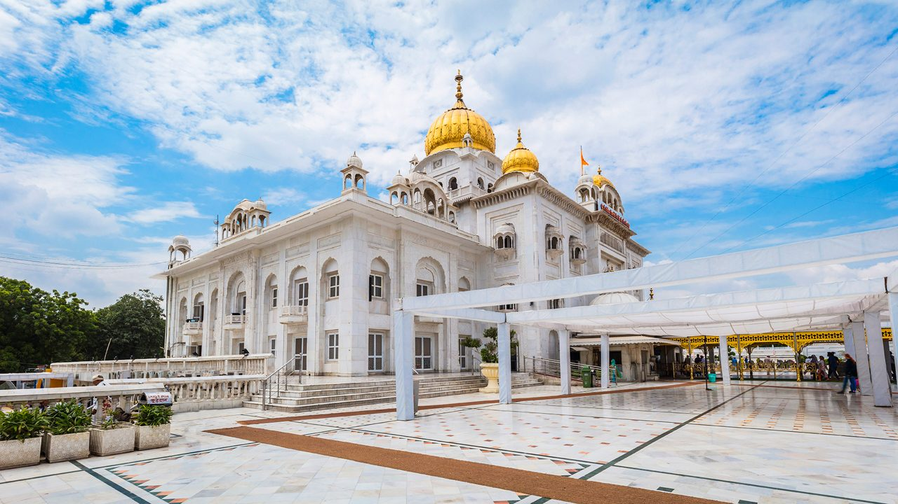
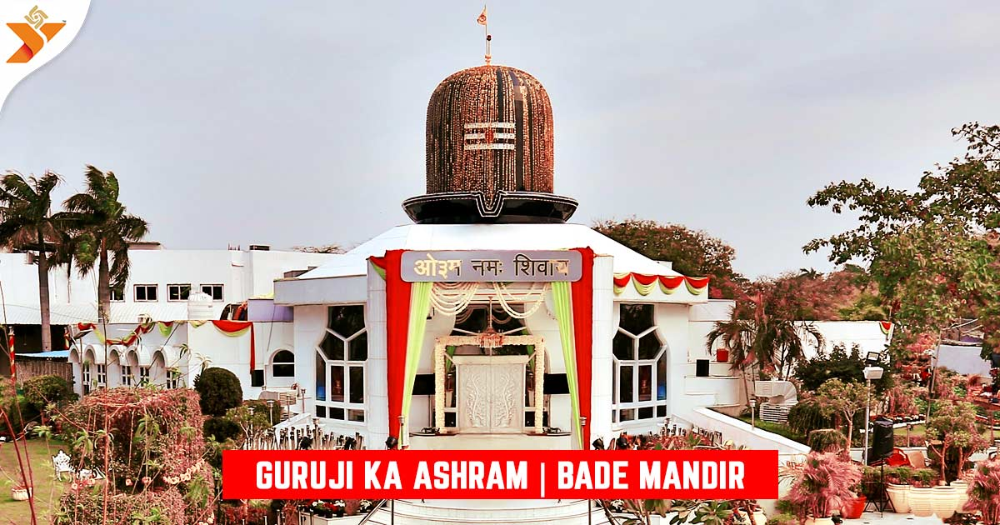
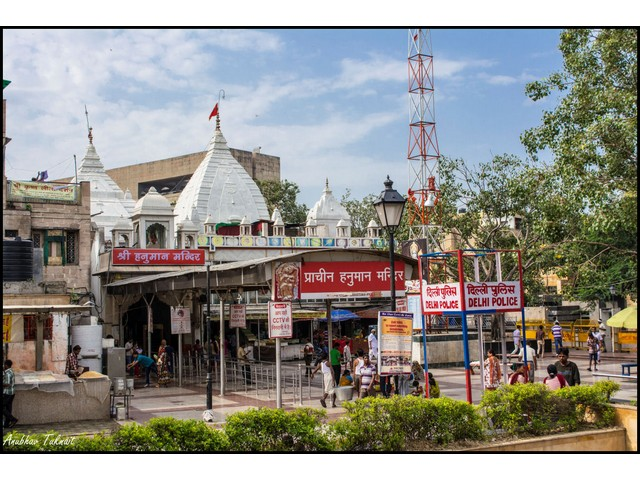
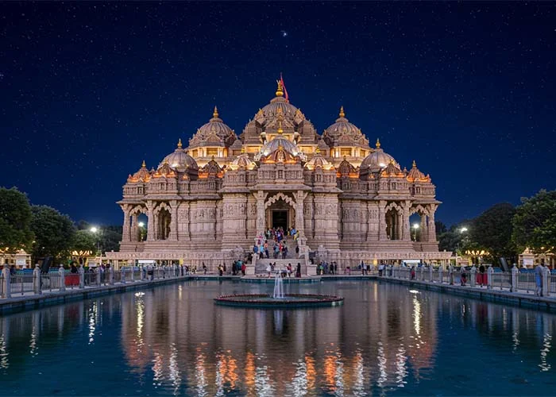
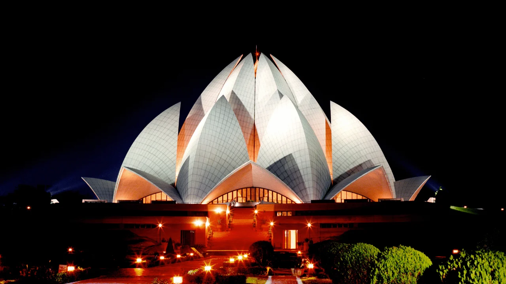

Temples in Delhi metropolitan
Bangla Sahib Gurdwara

Gurudwara Bangla Sahib in Connaught Place, New Delhi, is one of the most prominent Sikh houses of worship, renowned for its association with the eighth Sikh Guru, Guru Har Krishan. Famous for its stunning golden dome, white marble architecture, and the sacred pond (Sarovar), it operates 24/7, providing free meals (langar), medical services, and spiritual solace to thousands daily.
- Visitor Information
- Location: Near Connaught Place (CP), Ashoka Road, New Delhi.
- Metro: The closest stations are Rajiv Chowk (Yellow/Blue line) and Patel Chowk (Yellow line).
- Timing: Open 24 hours, with the best experience during early morning or evening Kirtan (devotional music).
- Guidelines: Visitors must cover their heads (scarves are provided) and remove shoes before entering
- Click here for more information.
Guruji Bade Mandir Chhatarpur

Bade Mandir (or Guruji Ka Ashram) in Chattarpur, Delhi, is a renowned, serene temple dedicated to Lord Shiva, established by Nirmal Singh Ji Maharaj, known as Guruji. It is a popular spiritual site featuring a massive white marble structure with a large granite linga. Visitors experience peace, attend 2-hour devotional music sessions, and receive langar (food) and chai prasad, usually on weekends.
- Key Details & Information
- Location: Near Sawan Public School, Bhatti Mines, Chattarpur, New Delhi.
- Significance: Known as a "Shivpuri" (abode of Shiva), it is believed to be a place of healing and intense spiritual energy.
- Atmosphere: Extremely disciplined and clean environment maintained by volunteers.
- Rules: Generally closed on Tuesdays and Wednesdays.
- Offerings: No donations or specific items are required to be brought; tea and snacks are served.
- Architecture: Features a grand main hall with a large shivling and a smaller idol.
- More information here.
Birla Mandir (Laxminarayan Temple)

Birla Mandir (Laxminarayan Temple) in Delhi is a major Hindu temple dedicated to Laxmi (prosperity) and Narayana (Vishnu), built by B.R. Birla and inaugurated by Mahatma Gandhi in 1939. Located near Connaught Place, it is known for its Nagara-style architecture, white marble, and, importantly, its opening to all castes.
- Key Details
- Location: Mandir Marg, near Gole Market/Connaught Place.
- Timings: 4:30 AM – 1:30 PM & 2:30 PM – 9:00 PM.
- Entry Fee: Free.
- Best Time to Visit: Janmashtami and Diwali are celebrated with great fervor.
- More information here.
Prachin Hanuman Mandir

Prachin Hanuman Mandir in Connaught Place, New Delhi, is an ancient temple believed to date back to the Mahabharata era, famous for its 24-hour continuous "Sri Ram, Jai Ram, Jai Jai Ram" chanting since 1964, a Guinness World Record feat. Located on Baba Kharak Singh Marg, it features a self-manifested (Swayambhu) idol of Bala Hanuman facing south.
- Key Information
- Significance: Known as one of the oldest Hanuman temples in India. The idol is Swayambhu (self-manifested) and depicts Lord Hanuman in his child form (Bala Hanuman).
- History: Believed to be established by the Pandavas. The current structure was reconstructed by Maharaja Jai Singh in 1724.
- Location: Situated on Baba Kharak Singh Marg, near Rajiv Chowk Metro Station and Shivaji Stadium.
- Special Days: Extremely crowded on Tuesdays and Saturdays.
- Timing: Generally open from 5:00 AM to 10:00 PM or 11:00 PM.
- Unique Features: The spire features a crescent moon, gifted by a Mughal Emperor to Tulsidas. The temple is a symbol of religious harmony, located near a mosque and churches.
- Visitor Info: Famous for offering Prasad, Mehendi stalls, and surrounding market areas.
- More information here.
Akshardham Mandir

Swaminarayan Akshardham in New Delhi is a massive Hindu temple complex representing Indian culture, spirituality, and architecture, inaugurated on November 6, 2005. Built by BAPS using pink sandstone and marble without steel, it features a central mandir, exhibitions, and the Sahaj Anand Water Show. It is dedicated to Bhagwan Swaminarayan.
- Visitor Information:
- Location: NH 24, Akshardham Setu, New Delhi.
- Timings: Open Tuesday to Sunday (Closed Mondays), 9:30 AM to 6:30 PM (last entry).
- Entry Fee: Temple entry is free, but tickets are required for exhibitions and the water show.
- Security: Cameras, mobile phones, and electronic items are not allowed inside.
- Click here for more information.
Lotus temple

The Lotus Temple in New Delhi, opened in 1986, is a renowned Bahá'í House of Worship shaped like a floating lotus flower, featuring 27 free-standing, white marble-clad "petals". Designed by Fariborz Sahba, it is a prominent, award-winning landmark near Kalkaji that promotes unity, allowing visitors of all faiths to meditate in silence.
- Key Facts & Visitor Information
- Structure: 27 petals, 9 sides, 9 doors opening to a central hall accommodating 2,500 people.
- Location: Near Kalkaji Temple, East of Nehru Place, New Delhi.
- Metro: Kalkaji Mandir Metro Station.
- Entry Fee: Free.
- Timings: 9:00 AM – 5:30 PM (Oct–Mar); 9:00 AM – 7:00 PM (Apr–Sep); Closed on Mondays.
- Best Time to Visit: Winter (October to March).
- Click here for information.
Iskcon temple

The ISKCON Temple in Delhi (Sri Sri Radha Parthasarathi Mandir), located at Hare Krishna Hills in East of Kailash, is a renowned Vaishnava temple opened in 1998. It is one of India's largest temple complexes, featuring striking, modern, and traditional architecture, dedicated to Lord Krishna and Radharani.
- Visitor Information:
- Timing: Generally open from 4:30 AM to 1:00 PM and 4:00 PM to 9:00 PM.
- Entry Fee: Free entry.
- Best Time to Visit: During festivals like Janmashtami and Radhastami.
- Accessibility: Easily accessible via the Nehru Place Metro Station.
- Click here for more information.